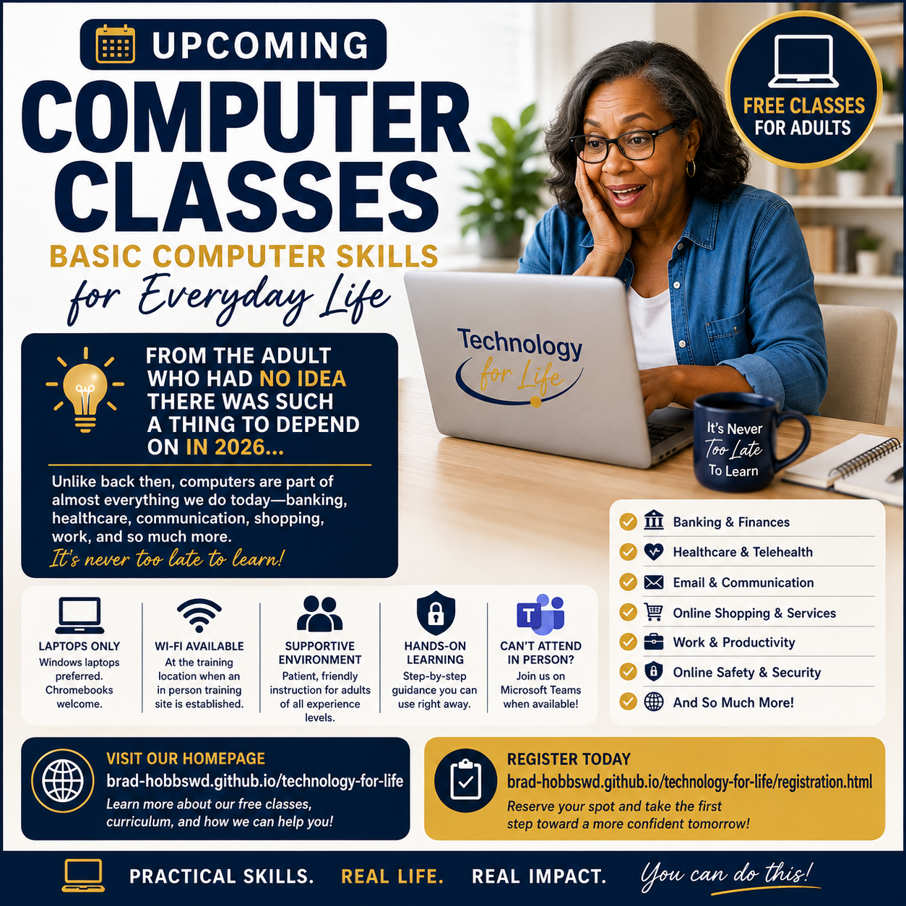

01
Understand
Learn what the computer, keyboard, mouse, desktop, windows, programs, files, and folders actually do.
FREE • IN PERSON • ADULT LEARNING
Technology for Life helps adults build practical computer skills, confidence, and independence in a welcoming environment where questions are always welcome.

UPCOMING COMPUTER CLASSES
You do not have to have grown up with computers to learn how to use them. Technology for Life is designed for adults who want practical skills, greater confidence, and a better understanding of the technology they depend on today.
Register for ClassesWELCOME
Technology may have changed quickly, but learning does not have an expiration date. Whether you remember a time before computers were part of everyday life or you simply never had the opportunity to learn, you belong here.
Our classes are designed for adults of all ages. We move at the pace of the learners, provide hands on practice, and make room for questions, repetition, and individual assistance.
PHASE ONE
Phase One focuses on laptop computers. Windows laptops are the primary platform for instruction, and Chromebooks are also welcome. Mac laptops may be used, but Mac specific instruction is more limited. Desktop computers are not permitted for in person training because they are not practical to transport. If a class is offered through Microsoft Teams, learners may use a desktop computer from home.
Learn what the computer, keyboard, mouse, desktop, windows, programs, files, and folders actually do.
Bring your own Windows laptop or Chromebook and practice each skill on the computer you will use at home.
Develop practical skills for everyday computer use while learning how to recognize and solve common problems.
WHAT TO EXPECT
Each meeting lasts two hours. A typical learning session is planned for at least six weeks, meeting one day each week. This is a minimum framework. Some studies may take less time, while hands on studies may require additional weeks for practice, repetition, troubleshooting, and individual support.
Classes are free. We encourage learners to contribute through their time, attention, willingness to practice, patience, encouragement, or ability to help others. Financial donations are welcome when a learner is able, but no learner is required to donate money or volunteer in order to participate.
See the full schedule formatOUR PROMISE
“There are no stupid questions here.”
If something needs to be explained three times, we explain it three times. If it needs to be practiced ten times, we practice it ten times. Learning is not a race.
The goal is simple: I can do this.